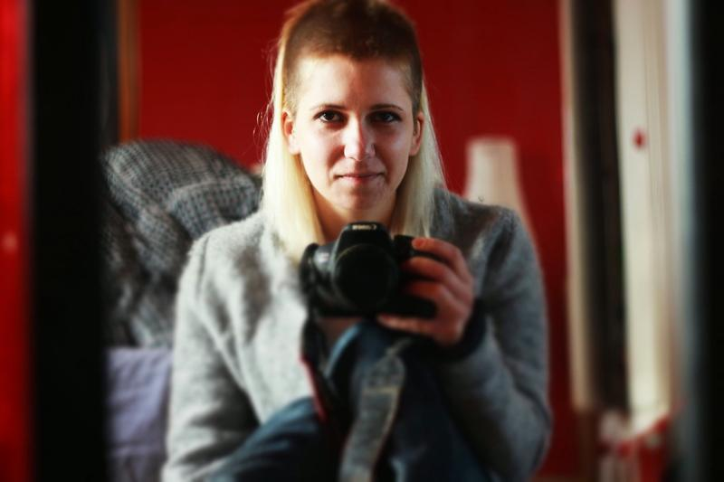
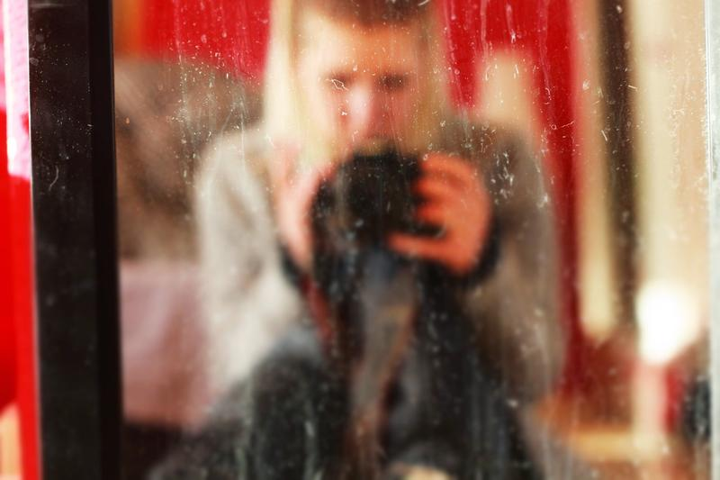
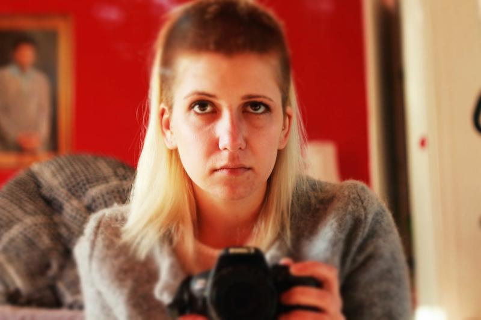
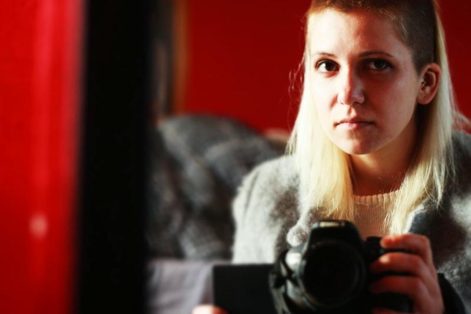
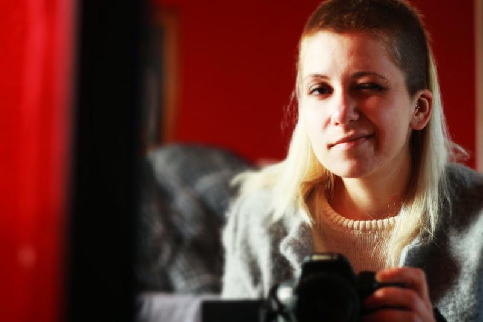
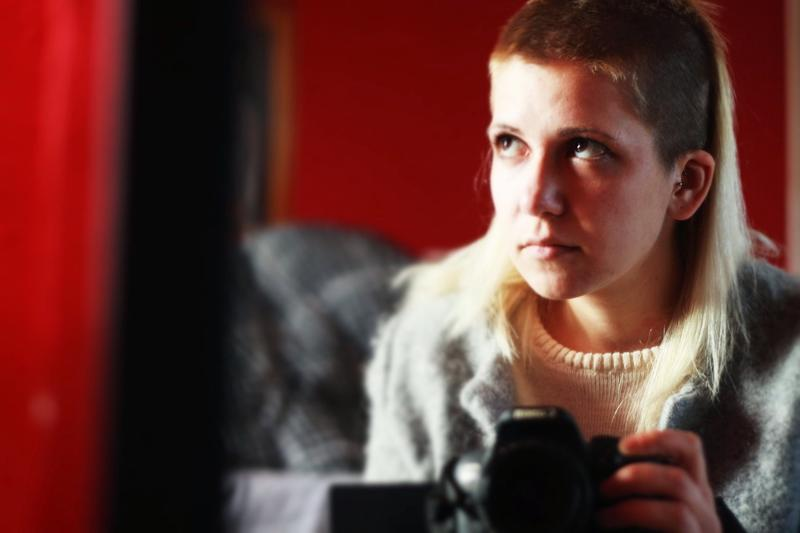
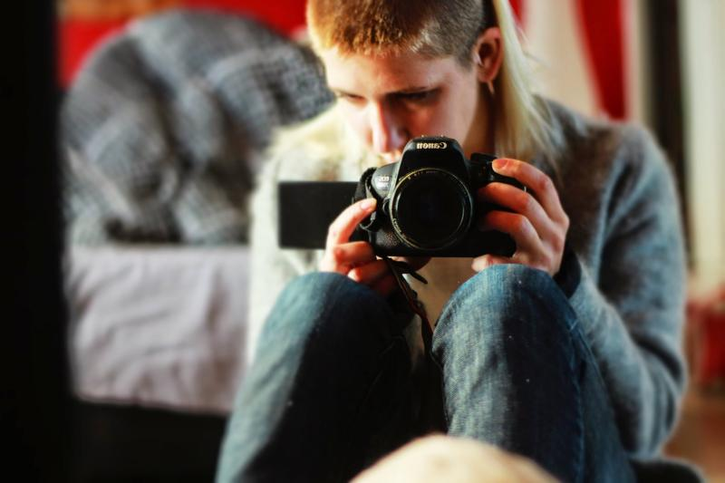

A photographic sequence built around small gestures, surfaces, tension, and the kind of silence that is not empty at all. The images stay close to matter and touch, letting the object become almost event-like.
Artist note
A series of mirrored self-portraits where hair becomes material, gesture, and trace. Each cut alters the surface of identity, shifting between concealment and exposure. The mirror holds both clarity and distortion, a stage for fragmented performances of the self. A faint smile slips through—half defiance, half disguise—revealing the tension between vulnerability and control.






